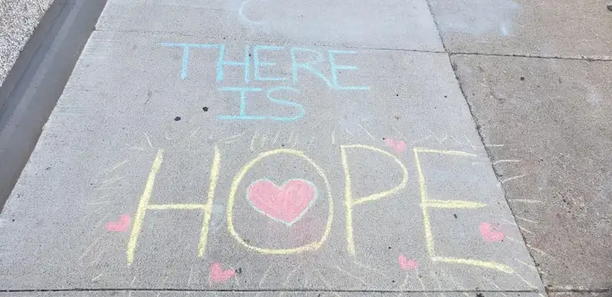
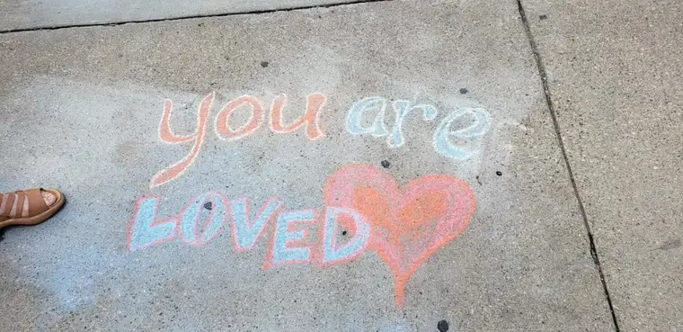

When two new enthusiastic prayer advocates started coming to the sidewalk at our state’s only abortion facility this past summer with a bucket of colorful chalk to write messages of hope, I saw the writing on the wall—uh, sidewalk—or at least I thought I did.
But God, through a few young servants and their zeal, proved me wrong.
It had been happening off and on for quite a while. I’m not sure if the escorts or the advocates started it, but for years, chalked messages had been showing up there, most vividly during the 40 Days for Life prayer campaign, when the energy at this fateful facility heightens and posters and messages from both sides pop up plentifully.
One year the chalked messages written by the escorts, who’d organized a chalk party in anticipation of the annual vigil, was downright vulgar, showing drawings of female sexual parts and raunchy words.
While valiant attempts have been made to counter with our own, more uplifting chalk messages, the escorts often rub, sweep, or wash them away.
But lately, the message erasers seem to have grown weary, and I find myself sheepish in my prediction that sidewalk chalking is ultimately futile. These determined, optimistic advocates and their persistent pro-life “propaganda” have produced unexpected fruits.
Not only are the messages staying longer, but I’ve found myself feeling encouraged upon arriving at the sidewalk each week, greeted by words like, “Superman was adopted,” “You are loved,” “There is hope,” and, “A baby is a gift,” decorated with hearts and smiley faces.

A post-abortive friend, who remembered her own dark walk to the door of that ominous building years ago, affirmed the probable success of the messages sharing, “The women are much more likely to see the messages on the ground than anything else, since most are looking down.”
Additionally, a few passersby have stopped by with small-cash donations. “Use this to buy more chalk. I love the messages.” And one of our advocates reported from her station one day: “A random gentleman walking down the sidewalk was very intentionally stopping to read each (chalk message) with a big smile on his face.”

One of the pro-life chalk artists says she and her friend simply intended to write positive messages for the women going into the facility, the workers and escorts, and nearby businesses. “What was inspiring to me was that God’s word and truth never came back void. Even if an escort or angry passerby scrubs off the words, those words are still there (in their minds).”
Another pro-life artist notes that someone called the police on them twice, but sidewalk messages are legal as long as they’re not permanent. “It’s important to know your rights on the sidewalk,” she said. “The original idea was to write messages of life for the women. Then we realized that the escorts were reading them—even if they were doing so while washing them off.”
Despite all this, a recent report in The Forum newspaper, “Fargo businesses and clinic escorts in sidewalk chalk war with anti-abortion protesters,” mentioned “anti-abortion protestors” who “flock to downtown with shocking signage of fetuses and are met with calm volunteer escorts in rainbow vests,” making the escorts seem heroic.
The Forum piece frustrated some of the advocates I talked to, but some also commented on how the picture accompanying the story trumped any omission or spin, since the visual often resonates most. Specifically, the photo, run on the front page, showed the sidewalk and one of those “pesky” pro-life sidewalk messages: “You are loved. Your baby is loved. We can help you choose life.”
It’s impossible not to smile as one looks down at the colorful, pro-life messages on the sidewalk, to pause and praise the good God who brings life. Love really does win in the end.
As fall encroaches, the sidewalk chalk will soon be put away for the season. But in Luke 19:40, we get a hint of the permanence of these messages of life. When the Pharisees ask Jesus to rebuke his disciples for praising God, he replies, “I tell you, if they keep silent, the stones will cry out!”
And so, when the snow blankets the ground soon, freezing the rocks embedded into the sidewalk beneath, may the words of hope written upon those stones in warmer weather cry out into our hearts still, ringing loudly for life.
[Note: I write about my experiences on the sidewalk Downtown Fargo on Wednesday, the day abortions happen at our state’s only abortion facility, for New Earth magazine — the official news publication of the Fargo Diocese. I hope you find “Sidewalk Stories” helpful in understanding the truth about abortion and how it plays out tragically each week here in Fargo, N.D. The preceding ran in New Earth’s October 2019 issue.]